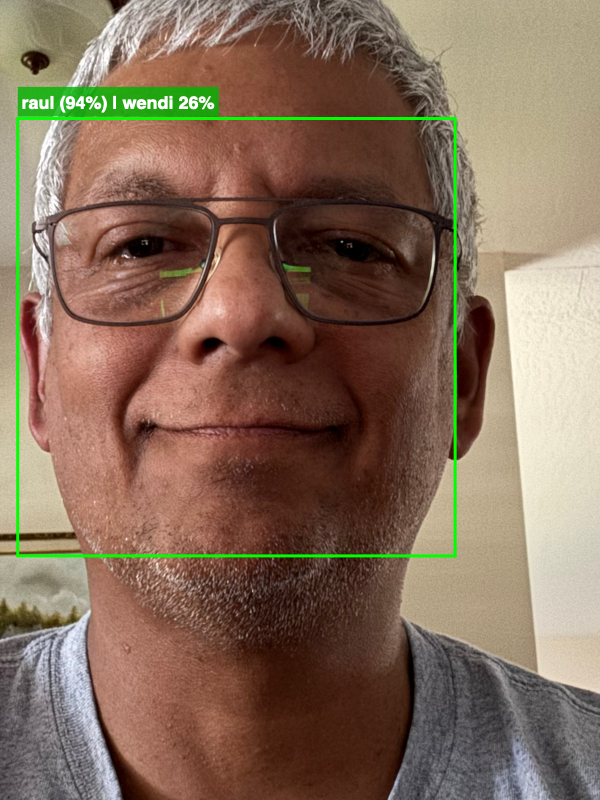
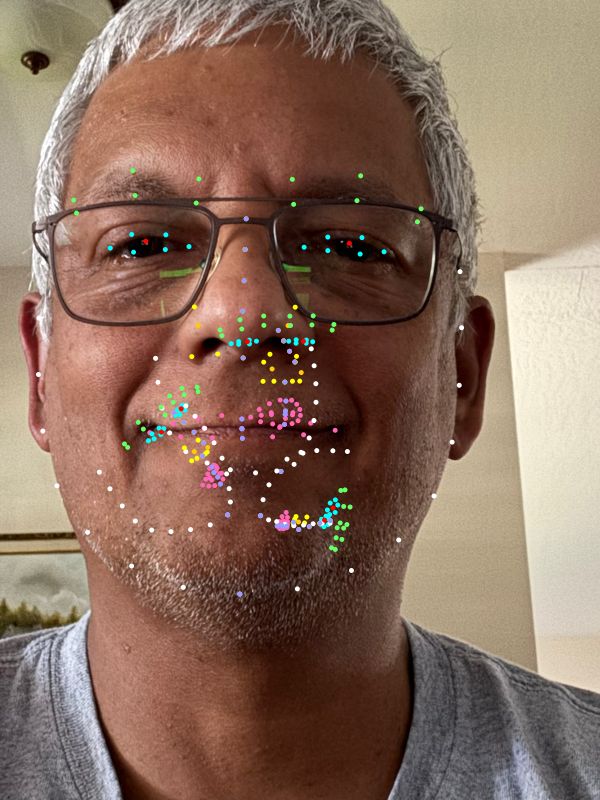
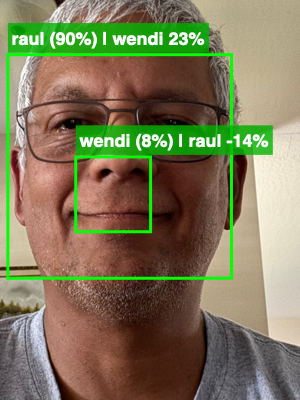
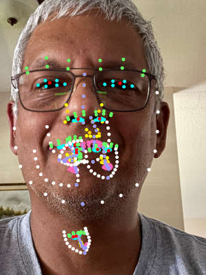
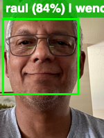
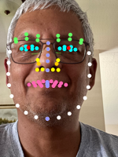
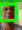
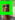

800px
Face recognition systems must operate across a wide range of face sizes, from close-up portraits to distant subjects in surveillance or group photographs. While deep learning approaches typically require input images of 112×112 or larger, lightweight geometric descriptor methods that operate on facial landmark positions may have different resolution requirements.
This paper presents an empirical study of the minimum face resolution required for a geometric descriptor-based recognition system built on Apple's Vision framework (VNDetectFaceLandmarksRequest, revision 3). The system extracts 82 facial landmark points, computes 8 region centroids, and produces a 40-dimensional descriptor based on inter-centroid distances and region extents, normalized by inter-ocular distance (IOD).
The key question is: at what face bounding box size do landmark positions become too noisy for the geometric ratios to remain discriminative?
The recognition pipeline consists of three stages:
VNDetectFaceLandmarksRequest (rev. 3) with multi-scale tiled detection at 1×, 2×, and 4× magnification, plus vertical-flip detection for inverted faces.(1 − distance/threshold) × 100%.A single high-resolution portrait photograph (2316×3088 pixels) of a known subject ("raul") was used as the source image. The image was first cropped to a 1158×1544 region centered on the face, then progressively downscaled using bicubic interpolation (via macOS sips) to 11 target sizes ranging from 800 to 20 pixels on the longest edge.
At each scale, the full recognition pipeline was executed. For each detected face, we recorded:
The training database contained descriptors for two subjects: "raul" (the test subject) and "wendi" (a different person), trained from multiple images at various angles.
| Image Size (px) | Face BBox (px) | Total Detections | False Positives | Best Match | Confidence | Correct? |
|---|---|---|---|---|---|---|
| 600 × 800 | 437 × 437 | 4 | 3 | raul | 93.9% | ✔ |
| 300 × 400 | 224 × 224 | 6 | 5 | raul | 89.7% | ✔ |
| 150 × 200 | 109 × 109 | 1 | 0 | raul | 83.9% | ✔ |
| 112 × 150 | 85 × 85 | 1 | 0 | raul | 83.1% | ✔ |
| 75 × 100 | 54 × 54 | 1 | 0 | raul | 79.9% | ✔ |
| 60 × 80 | 46 × 46 | 1 | 0 | raul | 79.6% | ✔ |
| 45 × 60 | 34 × 34 | 1 | 0 | raul | 80.3% | ✔ |
| 37 × 50 | 28 × 28 | 1 | 0 | raul | 67.7% | ✔ |
| 30 × 40 | 23 × 23 | 1 | 0 | raul | 66.9% | ✔ |
| 22 × 30 | 16 × 16 | 1 | 0 | wendi | 48.1% | ✘ |
| 15 × 20 | 11 × 11 | 1 | 0 | raul | 41.8% | ✔* |
Table 1. Detection and recognition results at each resolution. Face BBox is the bounding box reported by Vision. Color key: ■ Reliable (≥80%) ■ Degraded (40–79%) ■ Misidentified. *Correct label but confidence too low for practical use.
| Face Width (px) | Confidence | Distribution |
|---|---|---|
| 437 | 93.9% | |
| 224 | 89.7% | |
| 109 | 83.9% | |
| 85 | 83.1% | |
| 54 | 79.9% | |
| 46 | 79.6% | |
| 34 | 80.3% | |
| 28 | 67.7% | |
| 23 | 66.9% | |
| 16 | 48.1% | |
| 11 | 41.8% |
Table 2. Confidence score (best match) as a function of face bounding box width. Blue = correct identification, orange = correct but degraded, red = misidentified.
The following figure pairs show the annotated detection output (left) and the landmark overlay (right) at each resolution, illustrating how landmark placement degrades as resolution decreases.








The results reveal three distinct operating zones:
| Zone | Face BBox Width | Confidence Range | Behavior |
|---|---|---|---|
| Reliable | ≥ 34 px | 80–94% | Correct identification with high confidence. Landmark positions are precise enough for geometric ratios to be discriminative. |
| Degraded | 23–28 px | 67–68% | Correct identification but with reduced confidence. Landmark noise increases inter-centroid distance variance. |
| Unreliable | ≤ 16 px | 42–48% | Misidentification or low-confidence guesses. Landmark positions are dominated by quantization noise. |
Table 3. Three resolution zones identified from the experimental results, with corresponding confidence ranges and observed behavior.
A notable finding is the confidence plateau between 34px and 54px face width, where confidence remains essentially flat at ~80%. This suggests that the IOD-normalized geometric descriptor is remarkably stable across a 1.6× scale range. The descriptor's reliance on ratios between region centroids rather than absolute positions provides inherent robustness to moderate landmark jitter.
The sharp transition between 34px (80.3%) and 28px (67.7%) represents the point where landmark quantization noise exceeds the discriminative margin between the two training subjects. At 34px, with 82 landmarks distributed across the face, each landmark has approximately 0.4 pixels of space — near the limit of subpixel precision.
Apple's Vision framework continues to detect faces and extract landmarks down to 11×11 pixels, demonstrating that the underlying neural face detector is far more resilient to low resolution than the geometric descriptor that depends on precise landmark positions. This gap highlights an important architectural consideration: detection capability exceeds recognition capability by approximately 3× in minimum resolution.
The system's multi-scale tiled detection (running at 1×, 2×, and 4× magnification) provides an effective mechanism for recognizing small faces in large images. A face occupying only 34 pixels in a 4000-pixel-wide image would be magnified to 136 pixels in the 4× pass, well within the reliable recognition zone. This means the practical minimum subject size in a full-resolution image is considerably smaller than the minimum face bounding box size reported here.
An unexpected finding is that the multi-scale tiled detection introduces false positive detections at higher resolutions. At 600×800 pixels, the system reported 4 face detections (3 false positives), and at 300×400 pixels, it reported 6 detections (5 false positives). At 200px and below, only the single true face was detected.
This is a direct consequence of the tiling strategy. The 2× and 4× passes subdivide the image into overlapping tiles and magnify each tile before running Vision's face detector. When the source image is already high resolution, these magnified tiles can present textured regions — hair, clothing folds, background patterns — at a scale where the neural detector hallucinates face-like structures. The IoU-based deduplication (threshold 0.30) eliminates overlapping detections of the same face across tiles, but spatially distinct false positives in different tiles survive deduplication.
The false positives were filtered in the recognition stage: all phantom detections produced negative confidence scores (e.g., −26%, −157%, −698%) and were discarded before display. This demonstrates that the geometric descriptor acts as an effective second-stage filter — even when the detector hallucinates a face, the landmark geometry is sufficiently abnormal that the descriptor distance far exceeds the match threshold.
| Image Size (px) | Total Detections | True Positives | False Positives | FP Confidence Range |
|---|---|---|---|---|
| 600 × 800 | 4 | 1 | 3 | −26% to −698% |
| 300 × 400 | 6 | 2 | 4 | −67% to −966% |
| 150 × 200 | 1 | 1 | 0 | — |
| ≤ 150 | 1 | 1 | 0 | — |
Table 4. False positive detections by image size. All false positives were eliminated by negative confidence filtering in the recognition stage.
This trade-off is inherent to multi-scale tiling: the same mechanism that enables detection of small faces in large images also increases the false positive rate on high-resolution inputs. Potential mitigations include:
In the current system, the negative-confidence filtering already eliminates all false positives observed in this experiment. However, with a larger training database containing more subjects, the descriptor space becomes denser, and phantom detections could potentially match a real subject by chance. Adaptive tiling would provide a more robust defense.
For a 40-dimensional geometric descriptor based on Apple Vision framework landmarks:
The geometric descriptor's IOD normalization provides a broad plateau of stable performance from 437px down to 34px — a 13:1 scale range — before degrading rapidly. This makes it suitable for most practical scenarios where faces occupy at least ~35 pixels, and the multi-scale tiled detection extends this further for large images.
Experiment conducted March 25, 2026. Source code available in the vision repository, data available by request to [ vision at cgull.work ].
All images generated by ./vision detect.